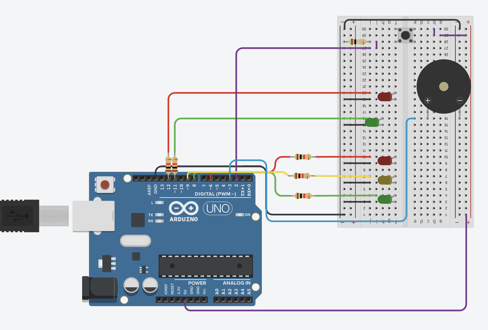
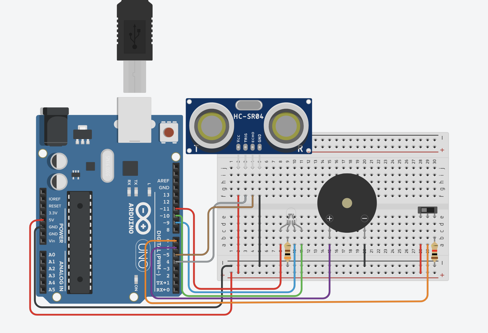
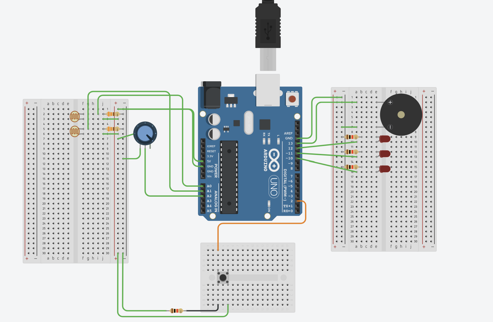
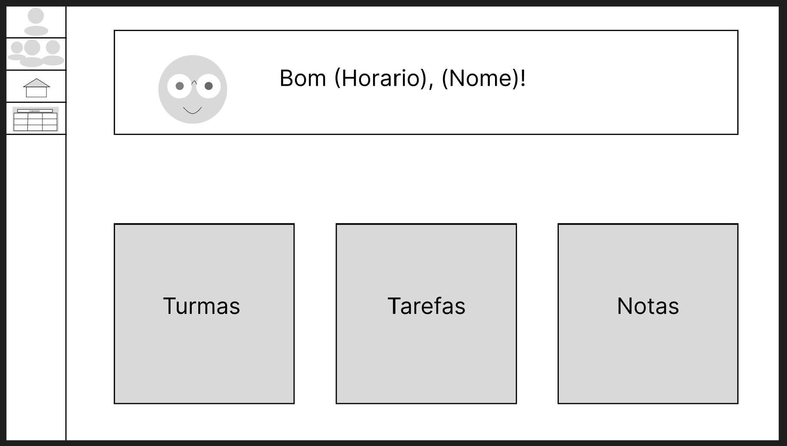

Sistema onde ao apertar um botão faz o sistema fechar o sinal de transito e permitir a passagem de pedestres
Tecnologias: C++, Arduino, Tinkercad
Ver no github
Sistema que mede a aproximação de um objeto ao outro, aplicado a estaciomentos em carros
Tecnologias: C++, Arduino, Tinkercad
Ver no github
Sistema de um jogo de arduino que faz apagar a luz caso de dia ou esteja claro, e evita desperdicio
Tecnologias: C++, Arduino, Tinkercad
Ver no github
Plataforma de ensino focada a jovens com foco em competição e conexão dos alunos das turmas
Tecnologias: HTML, CSS, JavaScript, Json server, Figma, Miro
Ver no githubPortifolio dos trabalhos feitos pela minha jornada nas ciencias da computação
Tecnologias: HTML,CSS,JavaScrpit, Figma
Ver no github